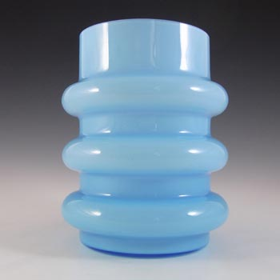

rue's archive
- glass ; pottery goods(espcially)
Vintage Scandinavian
/
1970's Blue Hooped Glass Vase

click to enlarge, scroll down for more
Description
A beautiful Scandinavian 1970's
blue 'hooped' glass vase with white interior casing.
Most likely made by one of the Swedish makers such as Lindshammar
or Ryd, but I have not seen this particular design
before with a label.
Size
Measures approx 7 inches tall
by 5.5 inches in diameter at widest point.
Condition
Excellent condition, no chips or cracks.
reference : seolmarine's youtube